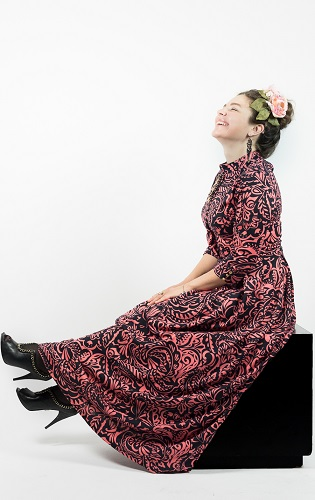
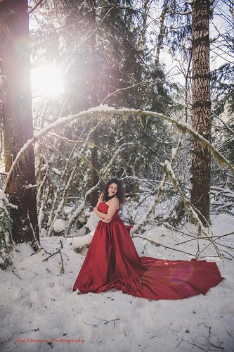

How I became a model
I'm an ordinary girl with some complexes, and sometimes self-doubt. I had never had a shoot with a professional photographer before my friend Lana Timkovskaya asked me one year ago, to pose for her photography school project. I was excited to have such opportunity! That shoot was in a studio, I had a couple of different outfits, and I was so stressed out. But after some time, I realized that I like to pose and laugh in front of the camera. After receiving the pictures from Lana, I was so impressed with results. Her work was amazing. I posted one of the pictures on my FB page, and I received many positive feedbacks on it. My friend Marina Sobchinska asked me if that was a photo session for some Fashion Magazine. Of course, it wasn’t, but that question inspired me. I also remember how my another friend Marina Gluzman told me that I should try to be a model. I really appreciate everybody who supported me that time and now! You guys are amazing!
This is my first professional picture in the studio
by amazing Photographer Lana Timkovskaya
Clearly, I don’t have a model appearance, and back to Ukraine, I wouldn’t even think about modeling. But here in the USA in the country with so many opportunities for everybody I was thinking about “What if I can try to become a model?” From that day I started to explore this field in Seattle. I didn’t find a lot of information about this topic on the web, but I kept searching. I found some Model Calls on Craigslist, and I sent many emails to ask to consider me as a model. I didn’t have a portfolio back then; I had just a couple of pictures from my very talented friend Lana. Therefore, nobody answered my emails. I almost gave up, but one day I found Facebook pages with the community where you could find a photographer and hair and make up artists for TFP (Trade for Print). That is when you collaborate with many talented people who sometimes don’t have much experience. I was that person because I didn’t have an experience in modeling. I tried to be a model just once, and that was for my friend. I sent tons of messages literally, and after some time people started to answer me and ask me to collaborate with them. The first photographer who answered was Anne Snider. We went to spectacular location near the Rainier. It was gorgeous out there. There was a lot of snow, but even though I was so cold I was very happy! Thank you, Anne, I appreciate that you took me to my first outside photoshoot. 
This is my first professional picture from the open shoot
by amazing Photographer Anne Snider of Skye Phoenix Photography
From that time, and this is almost one year, I have worked with more than 100 photographers we did so many interesting and beautiful photoshoots. I also did runways for amazing local designers to support Fashion Industry in Seattle area. Also, I worked with many creative hair and makeup artists. I was published a handful of times in fashion magazines. I am really happy with this achievement in my life. If you have any question, please send me a message. I would love to chat with you. I hope you enjoyed reading my post. Good luck in all your endeavors!Cheers!